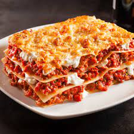

Lasagna

This is Lasagna. I love Lasagna.
The reason I love Lasagna is because I love pasta and I also happen to love meat, in layers
Ingredients
- 5 pasta
- 500 grams of ground meat
- A lot of white sauce
Recipe
- Cook the pasta.
- Layer it in a dish.
- Cook the ground meat.
- Add it to the dish (in between the layers of pasta).
- Pre-heat the oven for 5 minutes at 80 degrees Celcius.
- Add dish to oven and cook for 10 minutes
- Take out the dish and eat!